CHARACTER + UI
WELCOME TO MY CORNER OF THE WEB // UTC+8
CHARACTERS
with a pulse.
I’m Asher, a character-focused 2D artist and UI designer exploring color, composition, and visual storytelling—plus layered assets and Spine animation for games.
CHARACTER DESIGN ✦ ILLUSTRATION ✦ UI DESIGN ✦ SPINE ANIMATION ✦ VISUAL DEVELOPMENT ✦
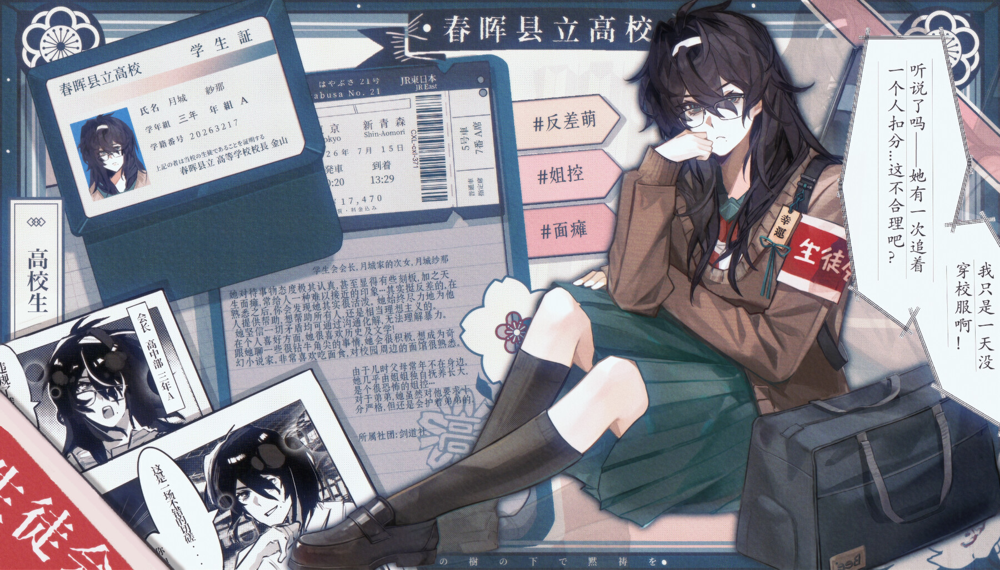
03–04years creating
2D + UIprimary focus
SPINEsecondary skill
EN / 中文bilingual artist
/01 SELECTED WORK
THE ARCHIVE
Character cards, narrative compositions, interface design, and development sheets. Click any piece for a closer look.
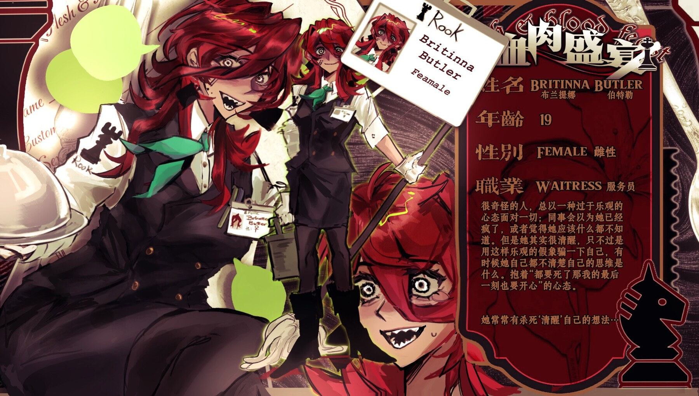
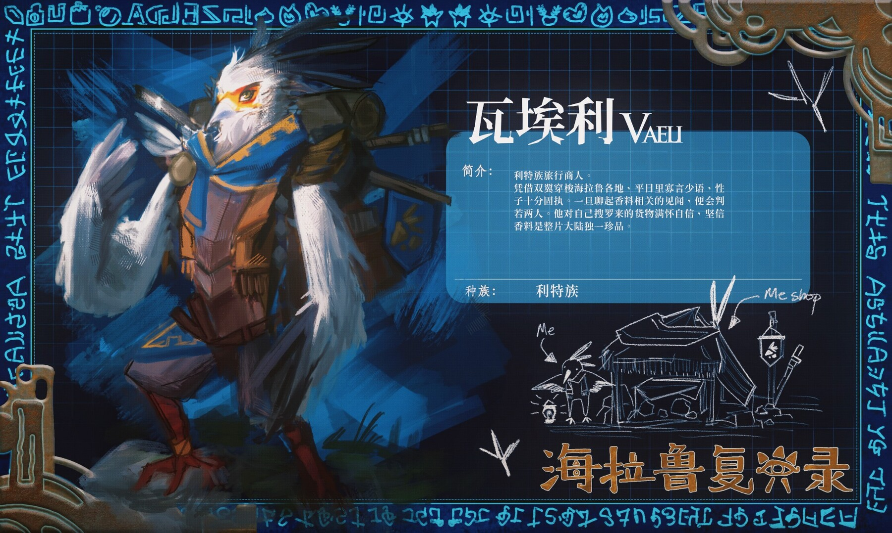
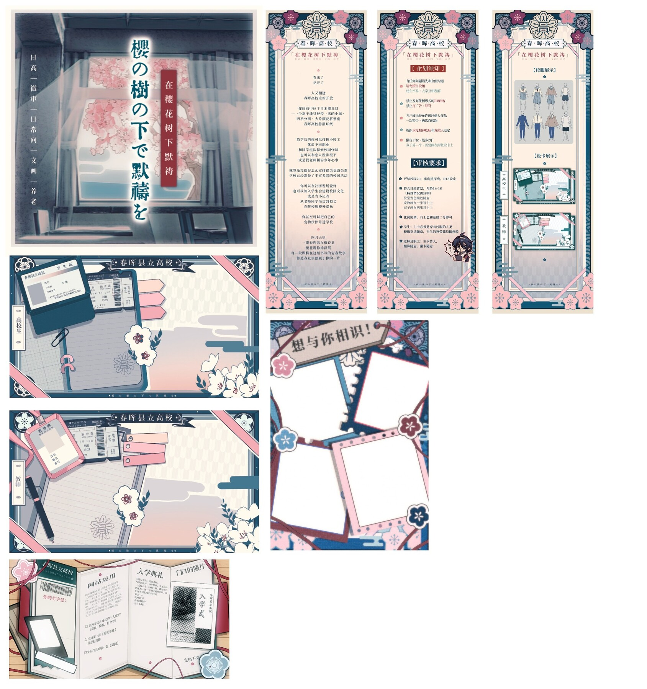
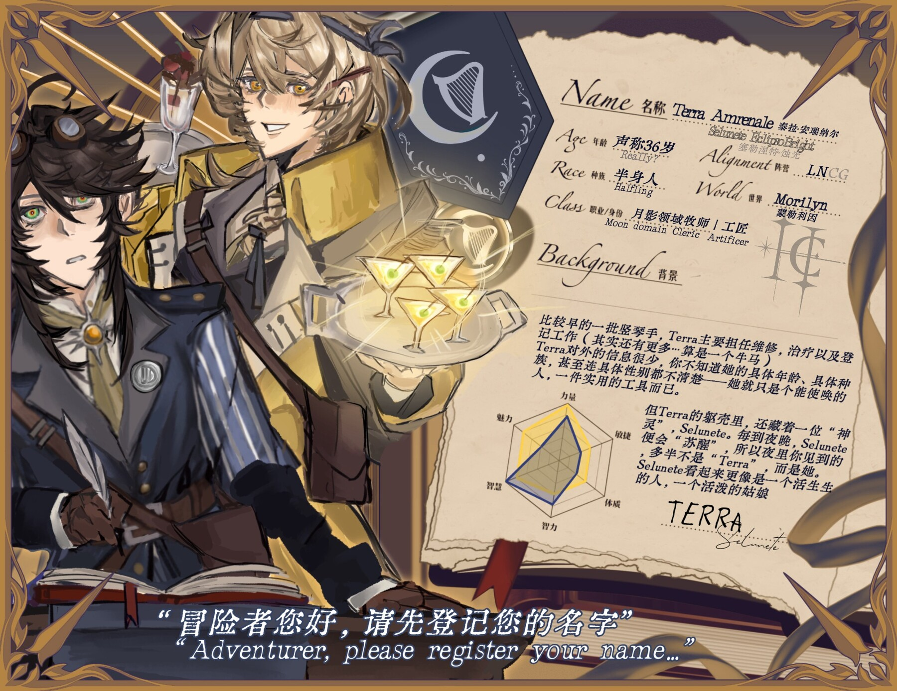
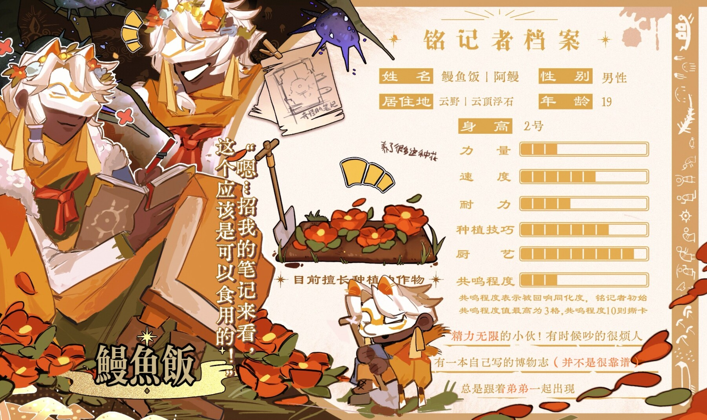
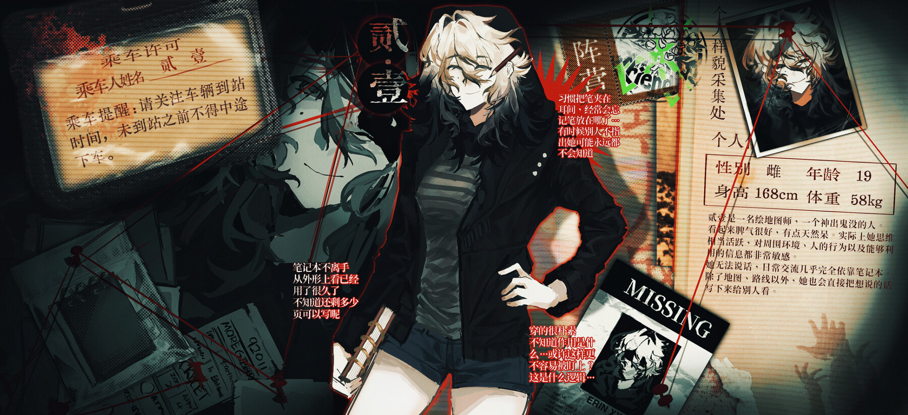
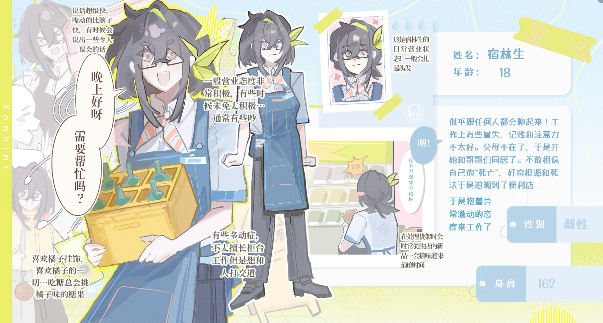
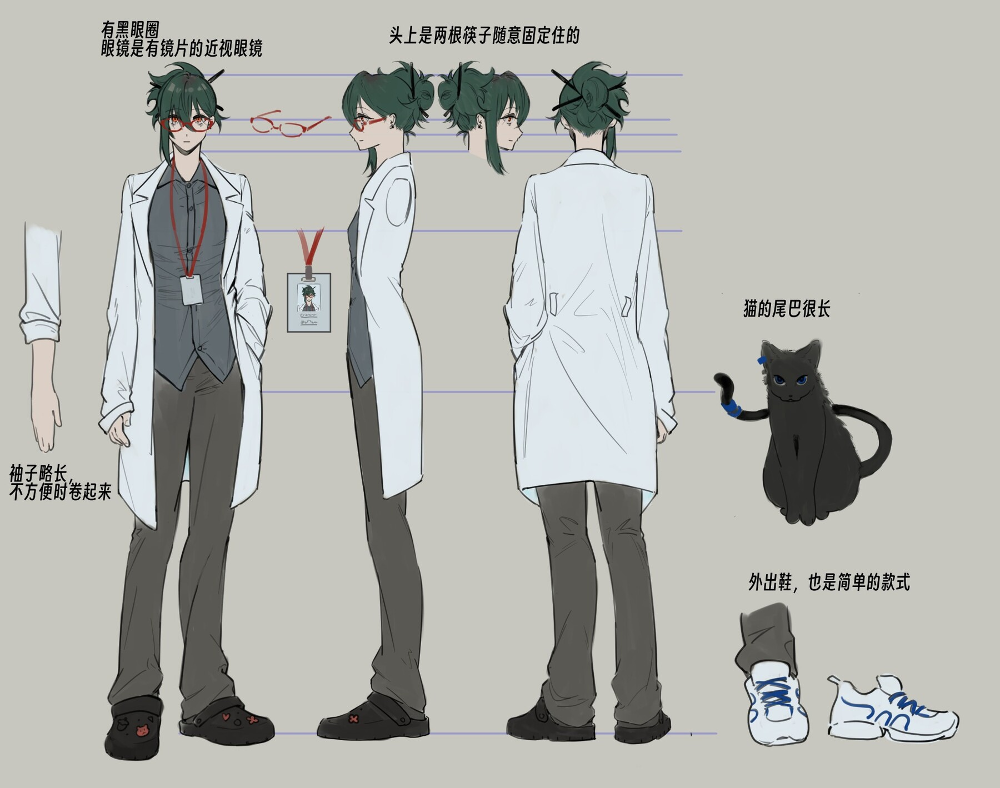
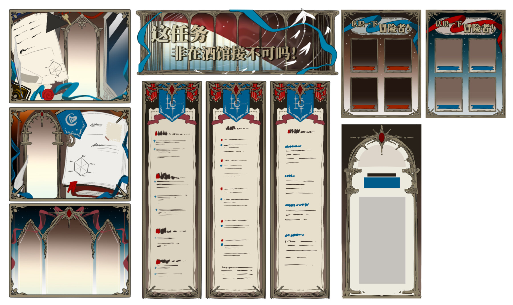
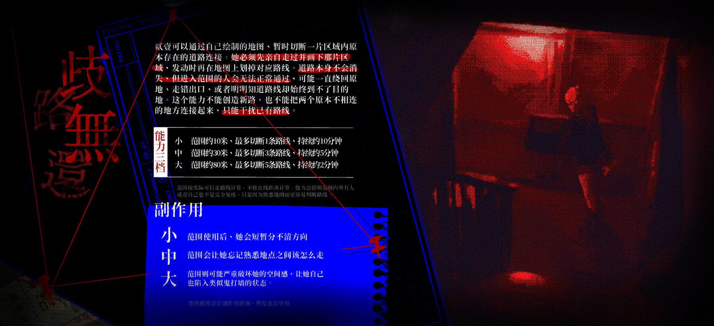
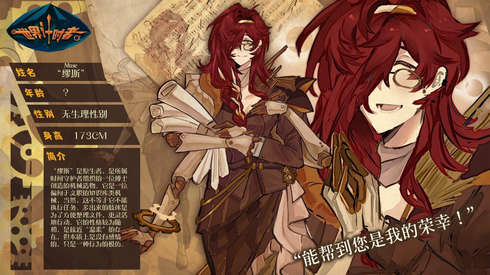
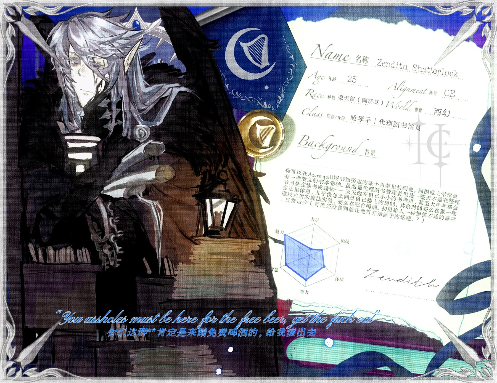
/02 WHAT I CAN DO
PLAYER STATS
Built for small, creative teams where visual development and practical production need to meet.
2D Illustration
Character concepts, portraits, CG illustrations, backgrounds, and promotional artwork.
UI Design
Game interfaces, themed panels, icons, states, information layouts, and visual direction.
Spine / Live2D
Layer separation, rig preparation, and character animation for expressive in-game portraits.
Game Pipeline
Comfortable preparing assets for Unity and working alongside designers and developers.
TOOLBOX.EXEProcreateClip Studio PaintPhotoshopSpineLive2DUnityAfter Effects
/03 HOW I WORK
PROCESS
A clear, collaborative workflow with check-ins at every major stage. Before I begin, I need a short project brief so we are working toward the same visual direction.
00
Before we start
- What would you like me to create?
- What is the complete asset list?
- What color palette or overall mood do you want?
- Are there games, shows, artists, or other media you want me to reference?
- What are the intended platform, dimensions, and deadline?
Direction & Research
I form a mood board and establish the general visual direction. When needed, I also study a specific style, medium, game, or show and collect practical references for production.
Typical time: 2 hours–2 days, depending on scope and availability.Production
Illustration / UI
Sketch → palette check → color → rendering → final
Animation
Layer files → rigging → video preview → revisions → final
Review & Delivery
I send each major stage for review before moving forward. This keeps revisions focused and prevents large changes from arriving only after the piece is finished.
Final files are organized according to the needs agreed on in the brief.COPY-PASTE PROJECT BRIEF
WHAT DO YOU NEED?
Choose a project type, fill in whatever you know, and send the completed brief through Discord. Optional questions can be left blank.
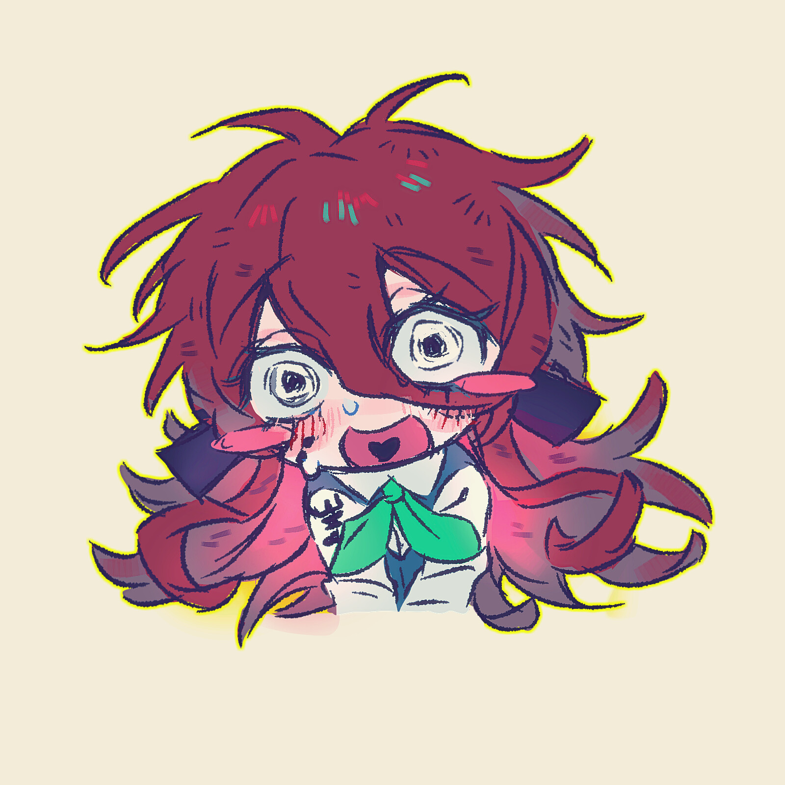
HELLO, INTERNET!
I’M ASHER.
I’m a student 2D artist and designer with 3–4 years of experience creating character-focused artwork. I like trying different visual styles while keeping composition, color, and storytelling at the center.
I’m especially interested in historical settings, fantasy, science fiction, and projects with imaginative worlds. I’m adaptable, communicative, quick to learn, and very open to feedback.
/04 SEND A SIGNAL
LET’S MAKE A
strange new world.
Looking for a character artist, UI designer, or Spine animator for your next jam? Discord is the fastest way to reach me.